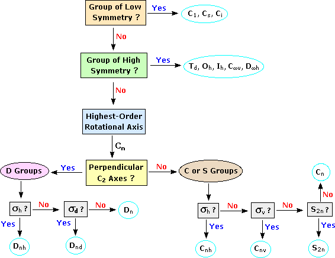

Symmetry in Organic ChemistryThe symmetry of a molecule is determined by the existence of symmetry operations performed with respect to symmetry elements. A symmetry element is a line, a plane or a point in or through an object, about which a rotation or reflection leaves the object in an orientation indistinguishable from the original. A plane of symmetry is designated by the symbol σ (or sometimes s), and the reflection operation is the coincidence of atoms on one side of the plane with corresponding atoms on the other side, as though reflected in a mirror. A center or point of symmetry is labeled i, and the inversion operation demonstrates coincidence of each atom with an identical one on a line passing through and an equal distance from the inversion point (see chair cyclohexane). Finally, a rotational axis is designated Cn, where the degrees of rotation that restore the object is 360/n (C2= 180º rotation, C3= 120º rotation, C4= 90º rotation, C5= 72º rotation). C1 is called the identity operation E because it returns the original orientation. | ||
Examplescis-1,2-Dichloroethenetrans-1,2-Dichloroethene cis-1,2-Dimethylcyclopropane trans-1,2-Dimethylcyclopropane Cyclohexane (chair conformer) Cyclohexane (boat conformer) Cyclohexane (twist boat conformer) Allene 1,3,5,7-Tetrafluoro-1,3,5,7-Cyclooctatetraene |
||
|
One more symmetry operation must be defined. Both trans-dimethylcyclopropane and 1,3,5,7-tetrafluoro-1,3,5,7-cyclooctatetraene have a C2 axis, and both lack a plane or center of symmetry. The former is chiral, but the latter is achiral because it has a S4 improper rotational axis (sometimes called an alternating axis). An improper axis, Sn, consists of a n-fold rotation followed by reflection through a mirror plane perpendicular to the rotation axis (n is always 3 or larger because S1 = σ and S2 = i). This is equivalent to saying that a n-fold rotation converts an object into its mirror image. Symmetry Point GroupsAn object may be classified with respect to its symmetry elements or lack thereof. This is done by assigning a symmetry point group, reflecting the combination of symmetry elements present in the structure. For example, bromochlorofluoromethane has no symmetry element other than C1 and is assigned to that point group. All C1 group objects are chiral. Other low symmetry point groups are Cs (only a single plane of symmetry) and Ci (only a point of symmetry). Objects in either of these point groups are achiral. Other high symmetry molecules belong to Oh and Ih point groups, which encompass 48 and 120 symmetry elements respectively. Cubane and SF6 are Oh examples, and C60 (fullerene) belongs to the Ih group. Objects of intermediate symmetry may be assigned to appropriate point groups by following the decision tree shown below. For example, trans-1,2-dichloroethene, which has a C2 axis perpendicular to its single plane of symmetry, belongs to the C2h point group. By clicking on any of the nine categories circled in light blue, further examples will be provided.
Point Group Decision Tree  | ||
Recognition of the three dimensional shape of molecules and the resulting symmetry implications is fundamental to an understanding of organic chemistry, especially stereoisomerism. The common occurrence of chiral centers, often asymmetric carbon units, in both natural and synthetic compounds has been described. In this section the treatment of chiral and achiral stereogenic elements will be extended to axes and planes.
The following diagram illustrates the structural relationship of a disubstituted tetrahedral carbon (Ca2b2) to an allene (top row), and a disubstituted alkene (abC=Cab) to an analogous 1,2,3-cummulene. In each case the structure is elongated by the insertion of two additional carbons. As a result of this elongation, the symmetry planes bisecting the a-C-a or b-C-b angles of the simple achiral tetrahedron are lost, and the allene is found to be chiral. Since no chiral center exists in this molecule, its chirality is due to the dissymmetric orientation of substituents about a chiral axis (the axis defined by the three carbon atoms of the double bonds). No dramatic change of this kind is observed for the alkene elongation shown at the bottom. The cis / trans diastereoisomerism observed in achiral compounds of this kind is due to the same axial stereogenic element present in the alkene itself. A general rule relating the spatial orientation of terminal substituents in cumulenes of varying size to the number of sp-hybridized carbon atoms is shown on the right in the diagram.
To assign a stereochemical prefix, i.e. Ra or Sa (the subscript a refers to the axial chirality), to chiral configurations of this kind the structure must be viewed from one end of the stereogenic axis (it doesn't matter which). A Newman projection, like the one seen from the left shown here, is then used for the assignment. If the sequence order of substituents is a > b, then the two substituents nearest the viewer are assigned a ranking of 1 (a) and 2 (b), while the remote substituents are given rankings of 3 (a) and 4 (b). Applying the viewing rule then leads to a unique notation (Ra in this case). This procedure may be used even when the A & B substituents on one sp2 carbon are different from those on the other sp2 carbon. For additional information about allenes, including the nomenclature of dissymmetric allenes and models of enantiomeric 2,3-pentadiene Click Here.
By clicking on the above diagram, additional examples of axial chirality will be displayed. The substituted alkylidenecycloalkanes and spiro-bicyclic alkanes are analogous to the allene and cummulene systems if one considers the double bonds to be two-membered rings. Thus, depending on the number of such units linked together, the terminal substituents will either be orthogonal or coplanar. These configurations are relatively rigid. Converting one to the other requires breaking and making bonds. Substituted biphenyls, on the other hand, exhibit a conformational enantiomorphism sometimes called atropisomerism. The configurational stability of such isomers depends on the energy barrier to rotation about the single bond connecting the rings, and this in turn is proportional to the size of the ortho-substituents on each ring. The stereoisomerism of substituted biphenyls has been described elsewhere in this text, together with other examples.
A similar axial dissymmetry is found in helical molecules, such as hexahelicene. Two views of the enantiomers of this interesting molecule are displayed below. When the configuration is viewed from above (or below) the helical turn, as shown by the structures on the left, its handedness may be established by the direction in which it turns. Imagine the helix is part of a screw, the axis of which is represented by the pink dot. If a clockwise turn of the screw would move it away from the viewer it is considered to have a plus or P configuration, also termed Ra or Rh by some. In contrast, if a counterclockwise turn moves the helix away it has a minus or M configuration, sometimes called Sa or Sh. Interactive models of enantiomeric hexahelicenes will be shown by clicking on the diagram.
Molecules having a plane of chirality are also known. Three examples are shown in the following diagram, and it should be noted that there is no asymmetric carbon present in any of them. In order to provide such chiral structures with a configurational prefix, a viewing rule has been established. First, the atom of highest priority (according to the CIP rules) that is directly bound to an atom in the chirality plane must be found. This atom, known as the pilot atom (P), is the point from which the chiral plane is viewed. In the ansa compound, 13-bromo-1,10-dioxa[8]paracyclophane, the chiral plane is the aromatic ring. The pilot atom is the oxygen-bound methylene carbon atom closest to the bromine atom on the aromatic ring. Starting from the pilot atom, the next three consecutive atoms in the chirality plane are labelled a, b, and c. In the case of branching options, the atom of highest CIP priority is selected. For the ansa compound, this leads to the aromatic carbon atom bound to bromine as c. Finally, the absolute configuration is called Sp or M if the atom sequence a–b–c, viewed from above the P–a bond, describes a counterclockwise arc. The configuration is termed Rp or P if this atom sequence describes a clockwise arc, as in its mirror image. The subscript p denotes that the configuration is established relative to a plane of chirality.
By clicking on the diagram the pilot atoms for each compound will be designated, and the a–b–c sequence for the ansa compound will be displayed.
The chiral plane in trans-cyclooctene is roughly the plane of the double bond, and in [2.2]paracyclophanecarboxylic acid it is roughly the plane of the aromatic ring bearing the carboxyl group. Due to strain, neither of these groups is truly coplanar, as may be seen in the three-dimensional models available below. Each model will display the pilot atom (there are two equivalent pilot atoms in trans-cyclooctene) and the resulting configurational sequence of atoms.
The following questions will test your understanding of these principles:
| Problem 1 | Problem 2 | Problem 3 |
|---|